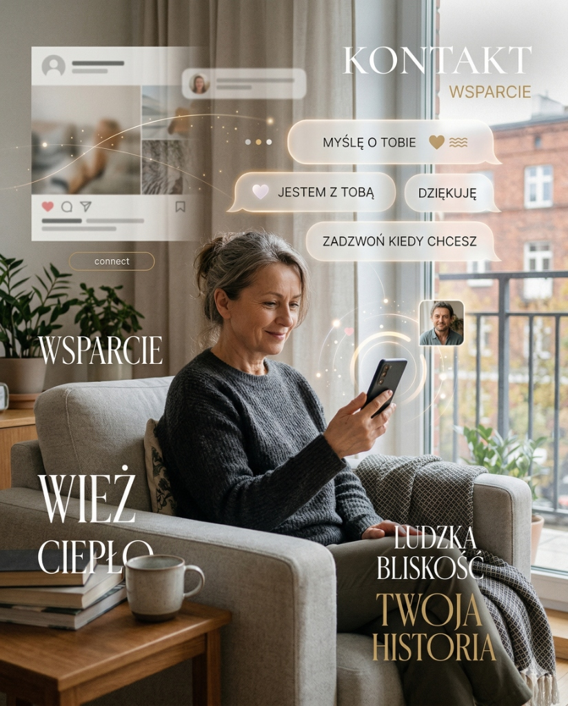

Pewnie masz kogoś w rodzinie albo znajomego, który mówi: te media społecznościowe to dla młodych, ja w to nie wchodzę, nie potrzebuję. I może ma rację, że nie potrzebuje. Ale może też traci coś, o czym nie wie. Bo nauka mówi, że dla osób po 50-tce media społecznościowe mogą być jednym z najlepszych narzędzi do zdrowego i ciekawszego życia. Serio.
Zacznijmy od mitu, który krąży najczęściej
Wiem co myślisz. Media społecznościowe to miejsce, gdzie ludzie pokazują co zjedli na obiad, kłócą się o politykę i wrzucają zdjęcia wakacji. Po co mi to?
I tu jest sedno sprawy, którego większość osób nie rozumie zanim spróbuje: media społecznościowe to nie jedno miejsce z jednym typem treści. To potężne wyszukiwarki wiedzy i rozrywki, które możesz dosłownie zaprogramować pod siebie. Nie musisz widzieć nic czego nie chcesz. Dosłownie.
Co nauka mówi o starszych dorosłych i mediach społecznościowych
Zanim przejdziemy do konkretów — jedno ważne zdanie. Były prowadzone dziesiątki badań naukowych na temat tego jak media społecznościowe wpływają na starszych dorosłych. Systematyczny przegląd aż 64 badań powiedział co następuje:
„Korzystanie z mediów społecznościowych jest powiązane z konkretnymi korzyściami dla starszych dorosłych: lepsza kondycja poznawcza, niższe poczucie samotności i depresji, lepsza łączność społeczna oraz wyższa jakość życia. Przegląd obejmował 64 badania, w tym 9 interwencyjnych (randomizowanych).”
Źródło: The relationship between social media use and psychosocial outcomes in older adults: A systematic review. International Psychogeriatrics. 2025.64 badania naukowe. Niejedna opinia. Niejedna strona internetowa. 64 niezależne prace naukowe które patrzyły jak media społecznościowe działają na ludzi w Twoim wieku. I wychodzi z tego jeden łączny wniosek: to działa. Przy rozsądnym użytkowaniu.
Samotność po 50-tce to nie kaprys — to epidemia z konsekwencjami zdrowotnymi
Tutaj muszę powiedzieć coś ważnego. Samotność po 50-tce, a szczególnie po przejściu na emeryturę, jest jednym z poważniejszych problemów zdrowotnych współczesnych społeczeństw. WHO ogłosiła ją w 2023 roku kryzysem zdrowia publicznego.
I tutaj media społecznościowe mają realną rolę do odegrania. Nie jako zastępstwo kontaktu face-to-face, ale jako jego uzupełnienie. Mostek, który działa, kiedy wyjście jest trudne, kiedy rodzina daleko, kiedy znajomi są zajęci.
Źródło: Social Media Communication and Loneliness Among Older Adults: The Mediating Roles of Social Support and Social Contact. PubMed 33284972.
Media społecznościowe a mózg — to się opłaca
To jest ten argument, który przekonuje mnie najbardziej. I który jest najmniej oczywisty.
Korzystanie z mediów społecznościowych to dla mózgu ćwiczenie. Naprawdę. Uczysz się nowych platform, nawigujesz interfejsy, piszesz, czytasz, komentujesz, reagujesz. To są aktywności kognitywne. I mają mierzalny efekt na kondycję umysłową.
Źródło: Internet-Based Social Activities and Cognitive Functioning... JMIR Aging 2024.
Uczenie się nowej aplikacji lub platformy społecznościowej aktywuje te same obszary mózgu co nauka języka obcego lub gra na instrumencie. Nowość i wyzwanie poznawcze są kluczowymi stymulantami wzrostu neuroplastyczności. Każdy raz, kiedy uczysz się obsługi nowej technologii — dosłownie budujesz nowe połączenia w mózgu.
Nie musisz nic o sobie pisać. Serio.
To jest chyba najczęstszy powód rezygnacji. Nie chcę ujawniać swojego życia. Nie chcę żeby wszyscy wiedzieli co robię. Nie chcę odpisywać ludziom.
I to jest całkowicie uzasadnione. I całkowicie niekonieczne. Pozwól, że wyjaśnię:
- Możesz założyć konto z pseudonimem. Instagram, Facebook i TikTok nie wymagają podania prawdziwego nazwiska ani żadnych danych osobowych poza adresem e-mail.
- Możesz mieć konto prywatne, które nie jest widoczne dla nikogo. Obserwujesz innych, ale nikt Ciebie nie obserwuje bez Twojej zgody.
- Nie musisz nic publikować. Możesz być wyłącznie obserwatorem. To się nazywa „ciche konto” — i większość ludzi tak zaczyna.
- Nie musisz odpisywać. Polubienie i przejście dalej są absolutnie akceptowalne.
- Możesz wyciszać, usuwać, blokować każdą osobę i każdy temat który Ci przeszkadza. Masz pełną kontrolę.
Załóż konto na Instagramie. Daj mu pseudonim lub imię. Ustaw na prywatne. Szukaj kont o tym co Cię interesuje: fitness, zdrowie, podróże, historia, gotowanie, fotografia. Obserwuj. Patrz. Nie musisz nic pisać. Po miesiącu algorytm będzie dokładnie wiedział co chcesz widzieć.

Bezpieczeństwo — co tak naprawdę warto wiedzieć
Obawy o bezpieczeństwo są uzasadnione. Ale większość z nich wynika z nieznajomości tego jak te platformy działają. Kilka prostych zasad — i ryzyko spada do poziomu porównywalnego z używaniem e-maila.
Zasady, które chronią skutecznie
- Nie dodawaj do kontaktów i nie akceptuj zaproszeń od osób których nie znasz. Jeśli konto wygląda podejrzanie (nowe, bez zdjęć, pierwsza wiadomość to prośba o pieniądze) — ignoruj i zablokuj.
- Nigdy nie klikaj linków w prywatnych wiadomościach od osób których nie znasz.
- Nigdy nie podawaj hasła, numerów kart, PESEL czy kodu bankowego. Prawdziwe platformy nigdy o to nie proszą.
- Ustaw dwuetapową weryfikację logowania (2FA) — każda platforma to oferuje za darmo. To jeden krok który chroni Twoje konto skuteczniej niż jakiekolwiek hasło.
- Nie używaj tego samego hasła co do banku czy e-maila.
Prawdziwe konta mają historię postów, zróżnicowane zdjęcia i reagują naturalnie. Kłamliwe konta mają bardzo mało postów, foto z różnych miejsc lub zdjęcia zbyt piękne by były prawdziwe. I niemal zawsze wiadomość pierwsza to prośba o pomoc finansową, link do strony lub zaproszenie do prywatnej rozmowy poza platformą. Ignoruj i blokuj.
Co konkretnie możesz tam znaleźć — tabela platform
| Platforma | Co tu znajdziesz | Szczególnie dobre dla |
|---|---|---|
| Grupy tematyczne (fitness, hobby, regionalne), kontakt z rodziną za granicą, wydarzenia lokalne, artykuły, humor. Najlepszy do znajomych i grup. | Utrzymania relacji, grup zainteresowań, wiadomości lokalnych. | |
| Zdjęcia, konta o zdrowiu, fitnessie, podróżach, sztuce, naturze. Mniej tekstu, więcej estetyki. Świetny do inspiracji wizualnych. | Motywacji do aktywności, inspiracji, śledzenia tematów. | |
| TikTok | Krótkie filmy o WSZYSTKIM — zdrowie, ćwiczenia, gotowanie, historia, nauka, humor. Algorytm TikToka jest najlepszy na świecie w dopasowywaniu treści. | Edukacji w przystępnej formie, zabawy, odkrywania nowych tematów. |
| YouTube | Dłuższe filmy instruktarzowe, dokumenty, wykłady, poradniki. Technicznie to nie media społecznościowe, ale działa podobnie. | Nauki, medycyny, fitnessu, podróży, dokumentalnych. |
TikTok po 50-tce — ale skąd wiem co tam jest?
TikTok ma opinię platformy dla nastolatków tańczących przy głośnej muzyce. I tak — to jest część TikToka. Ale jest też cały inny TikTok.
FitTok, MedTok, ScienceTok, HistoryTok, CookingTok — to są nieformalne nazwy społeczności wewnątrz TikToka, gdzie lekarze wyjaśniają choroby, dietetycy obalają mity, fizycy tłumaczą kwantową mechanikę w 60 sekund, szefowie kuchni pokazują przepisy a historycy opowiadają jak ludzie spędzali święta 100 lat temu.
Hashtag #LearnOnTikTok (ucz się na TikToku) ma ponad 1,3 biliona wyświetleń. Hashtag #Over50 i #FitOver50 mają setki milionów wyświetleń. Istnieją konta prowadzone przez 70- i 80-latków które mają miliony obserwujących właśnie dlatego, że mówią do rówieśników ich językiem i o ich problemach.
Algorytm TikToka jest dosłownie zaprojektowany tak żeby pokazywać Ci dokładnie to co chcesz zobaczyć. Jeśli zatrzymasz się na filmiku o zdrowiu — dostaniesz więcej o zdrowiu. Jeśli przesuniesz taniec — taniec zniknie. To nie jest magia. To matematyka. I ona działa na Twoją korzyść.
Grupy na Facebooku — jak znaleźć swoje plemię
Jedną z najbardziej niedocenianych funkcji Facebooka są grupy tematyczne. To zamknięte lub otwarte społeczności skupione wokół jednego tematu. Fitness po 50-tce. Bieganie seniorskie. Miłośnicy Nordic Walking. Zdrowe gotowanie. Ogrodnicy. Podróżnicy po Azji. Fotografowie amatorzy. Ludzie, którzy przetrwali rak. Ludzie, którzy budują domki na drzewach.
W każdej z tych grup są tysiące ludzi, którzy mają to samo zainteresowanie co Ty. I którzy odpowiadają na pytania, dzielą się doświadczeniami i kibicują sobie nawzajem. Tego nie znajdziesz w kawiarni ani na siłowni.
Źródło: The relationships between social internet use, social contact, and loneliness in older adults. Nature 2025.
Obalamy mity
| MIT | FAKT |
|---|---|
| To jest dla młodych. Nie dla mnie. | Badania pokazują, że dla starszych dorosłych media społecznościowe przynoszą większe korzyści zdrowotne niż dla młodszych. Samotność po 50-tce to poważny problem zdrowotny. Kontakt cyfrowy go częściowo rozwiązuje. |
| Muszę wszystko o sobie ujawniać. | Absolutnie nie. Możesz mieć pseudonim, konto prywatne, nie publikować nic i być wyłącznie odbiorcą. Platformy nie wymagają prawdziwych danych poza mailem. |
| To niebezpieczne, będą kraść moje dane. | Dane osobowe są zagrożone wszędzie. Karta bankomatowa jest bardziej ryzykowna niż profil na Instagramie przy odpowiednich ustawieniach. 2FA + nieujawnianie hasła = poziom bezpieczeństwa większy niż przy mailach. |
| Tam są tylko głupoty i kłótnie. | To jak powiedzieć, że w telewizji są tylko reklamy. Są i głupoty, i wartościowa treść. TikTok z edukacją zdrowotną, Facebookowe grupy wsparcia, instagramowe wykłady o historii — to istnieje. Trzeba tylko wiedzieć jak szukać. |
| To uzależnia i sprawia, że się gorzej czujemy. | U osób po 50-tce wyniki są odwrotne niż u nastolatków. U starszych dorosłych media społecznościowe redukują depresję i samotność. Problem uzależnienia dotyczy głównie młodszych grup wiekowych. |
| Jak się nie znam na technologii, to się nie nadaję. | Interfejsy Facebooka, Instagrama i TikToka są zaprojektowane tak żeby były proste. Jeśli potrafisz obsłużyć smartphone i wysyłać SMS-y — poradzisz sobie. Nauka trwa kilka dni. Po tygodniu jest naturalne. |
Na koniec — bo to jest najważniejsze
Nie mówię, że masz spędzać na Instagramie 4 godziny dziennie. Mówię, że 20–30 minut z dobrą treścią, którą sam/a wybrałeś — to jest rozrywka, edukacja i kontakt społeczny w jednym. Tyle samo, ile sprzątasz kuchnię. I z lepszymi skutkami dla nastroju.
Wiek to nie powód do pomijania tego co nowe. Nowość jest tym co trzyma mózg sprawnym. Widać to w badaniach, widać to u ludzi. Ci którzy się adaptują, którzy próbują, którzy są ciekawi — starzeją się zdrowiej.
„Korzystanie z Internetu jest związane z niższym poziomem depresji i samotności, wyższym zadowoleniem z życia, poczuciem celu i kapitałem społecznym. Postawy starszych dorosłych wobec technologii często odzwierciedlają mit, że są niezdolni do nauki i niemotywowani do korzystania. Badania temu przeczą.”
— Chopik W.J. — The benefits of social technology use among older adults are mediated by reduced loneliness. PMC5312603Spróbuj. Tydzień. Tylko obserwować. Znajdź jedno konto, które Cię autentycznie interesuje — o sporcie, zdrowiu, historii, przyrodzie — i popatrz przez tydzień. Potem zdecyduj.
Dawać sobie prawo do próbowania — to jedna z najzdrowszych rzeczy jakie można robić po pięćdziesiątce.